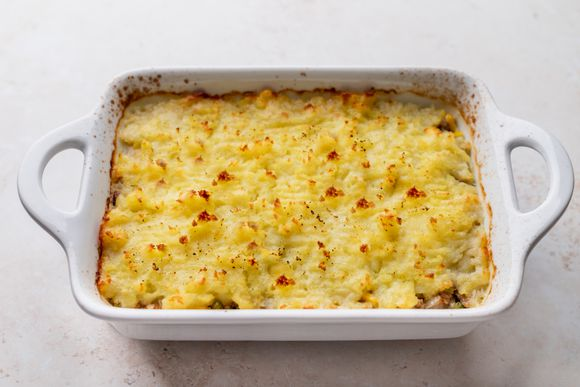

Sheppards Pie

Ingredients
1 teaspoon salt
3 large peeled potatoes
8 tablespoons butter
1 medium onion chopped
1 or 2 cups mixed vegetables
1 1/2 lb ground beef
1/2 cup beef broth
1 teaspoon Worcestershire sauce
pepper and other seasonings of choice
Directions
Place the peeled and quartered potatoes in medium sized pot. Cover with at least an inch of cold water. Add a teaspoon of salt. Bring to a boil, reduce to a simmer, and cook until tende
Preheat the oven to 400°F
While the potatoes are cooking, melt 4 tablespoons of the butter in a large sauté pan on medium heat. Add the chopped onions and cook until tender, about 6 to 10 minutes.
Add ground beef to the pan with the onions and vegetables. Cook until no longer pink. Drain the pan of excess fat, if necessary (anything more than 1 tablespoon). Season with salt and pepper.
Add the Worcestershire sauce and beef broth. Bring the broth to a simmer and reduce heat to low. Cook uncovered for 10 minutes, adding more beef broth if necessary to keep the meat from drying out.
When the potatoes are done cooking (a fork can easily pierce), remove them from the pot and place them in a bowl with the remaining 4 tablespoons of butter. Mash with a fork or potato masher, taste, and adjust seasonings with salt and pepper.
Spread the cooked filling in an even layer in a large baking dish (such as a 9 x 13-inch casserole.
Spread the mashed potatoes over the top of the ground beef. Rough up the surface of the mashed potatoes with a fork so there are peaks that will get well browned. You can even use a fork to make creative designs in the mashed potatoes.
Place in a 400°F oven and cook until browned and bubbling, about 30 minutes. If necessary, broil for the last few minutes to help the surface of the mashed potatoes brown.
Enjoy!